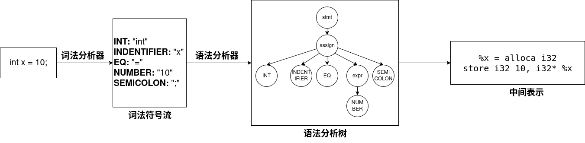

Week 2 - Lexer 1¶
编译器前端概览¶
编译器前端的工作主要可以分为两个核心部分：词法分析器（Lexer） 和 语法分析器（Parser）。
Lexer 的输入是一个超长的字符串（在编程场景下就是源代码）。它会将接收到的字符串分割成一个个有意义的（符合词法模式）、最小的词法单元（Token），并对其进行分类。如果用英语来类比，这就像是把一个英文句子拆分成一个个单词，并为每个单词标注词性。在这个过程中，如果 Lexer 无法将尚未处理的输入部分的前缀与任何一个预先定义好的词法模式匹配上，则会报词法错误（Lexical Error）。
例如，在下图中，对于代码 int x = 10;：
int被识别并归类为INT类型（关键字）x被识别并归类为IDENTIFIER类型（标识符）- 以此类推...
经过词法分析器处理后，正常情况下，我们会得到一串带有类型的词法单元序列，例如 INT, IDENTIFIER, EQ, NUMBER, SEMICOLON...... 我们通常称之为 Token Stream（Token 流） 。
接着，这个 Token 流会被交给 Parser。语法分析器会根据预设的语法规则，判断该 Token 流是否合法。如果合法，Token 流将被转换成一棵 Parse Tree（语法分析树） ；否则，语法分析器会报语法错误（Syntax Error）。在后续的步骤中，语法分析树会被进一步处理成 中间表示（Intermediate Representation） 。至此，编译器前端的工作就全部完成了，剩下的任务将交给编译器后端。

听上去，编译器前端的任务似乎相当复杂。的确，如果想从零开始完整地实现一个编译器前端，是一项极其困难的工作。但我们有 ANTLR 这个强大的工具，你可以利用它相对轻松地完成编译器前端的大部分工作。本周，我们将详细介绍如何使用 ANTLR 来完成词法分析。
制定词法规则¶
我们已经知道，词法分析器的工作是将源代码（一个巨大的字符串）分解成一个个“单词”，并为它们“划分词性”。为了实现这一点，我们需要制定一系列的 词法规则（用来描述每类“单词”长什么样子），而这些规则通常是用 正则表达式 来定义的。词法分析器会根据这些规则，逐一检查输入字符串中的字符，尝试匹配这些规则。一旦成功匹配某条规则，词法分析器就会记录下这个词法单元（Token），然后从下一个字符开始继续分析。请注意，这里我们简化了很多细节，实际匹配的过程中词法分析器会有不少复杂的动作，比如回溯、错误恢复（比如丢掉一些非法字符让编译过程继续）等。
正则表达式¶
正则表达式可被视为一种专门用来描述 字符串模式 的形式语言 (Formal Language)。所谓字符串模式，就是指符合某种特定规则的字符串。
举个例子，假设我们希望匹配 “以至少一个小写字母开头，后跟至少一个数字的字符串” 。我们无法直接将上面这段自然语言描述交给 ANTLR，它无法理解。这时，我们就需要使用 ANTLR 能“听懂”的形式语言——正则表达式。上述需求用正则表达式可以表示为：
简单解释一下：
[]表示一个字符集合，匹配集合内的任意一个字符。[a-z]就代表 a 到 z 之间的任意一个小写字母（等同于[abcdefg...z]）。[0-9]代表 0 到 9 之间的任意一个数字。+是一个量词，表示匹配它前面的元素一次或多次（至少一次）。- 与
+类似，*表示匹配前面的元素零次或多次。
正则表达式的表达能力非常强大。关于它的详细语法，你可以在教材中或网上轻易找到丰富的学习资料，这里我们不再赘述。
在 ANTLR 中使用正则表达式¶
还记得我们在上一章提到的 .g4 文件吗？你需要在这个文件中定义所有的词法规则（以及后续章节将要介绍的语法规则）。
那么，如何区分词法规则和语法规则呢？在.g4文件中，我们通过一个简单的约定来区分它们：以大写字母开头的规则是词法规则，而以小写字母开头的规则是语法规则。
我们以第一章的 Calc1.g4 文件为例来解释：
grammar Calc1;
expr : expr PLUS expr
| expr DIV expr
| expr PLUS expr
| expr MINUS expr
| factor
;
factor : INT
| ID
;
INT : [0-9]+ ;
PLUS: '+';
MINUS: '-';
MUL: '*';
DIV: '/';
ID : [a-zA-Z]+ ;
WS : [ \t\r\n]+ -> skip ;
-
第一行
grammar Calc1;声明了该语法（也可以叫作文法）的名称。这个名称会影响 ANTLR 后续生成的 Java 文件（如词法分析器、语法分析器等）的命名。 -
接下来以小写字母开头的这几行是 语法规则（也称为产生式），我们将在后面的章节详细介绍它们。
-
后面以大写字母开头的几行，就是我们的 词法规则。它们的基本格式是：
这里的“词法规则名称”就相当于我们之前提到的“词性”。后续的语法分析器实际上就是以这些“词性”的序列作为输入进行分析，而非直接分析原始的文本。
现在，我们再回头看看上一章生成的 Java 文件。其中，Calc1Lexer.java 就是 ANTLR 自动生成的词法分析器。让我们稍微修改一下上一章的代码，来仔细观察它到底把我们的源码划分成了什么样。
import generated.Calc1.Calc1Lexer;
import org.antlr.v4.runtime.CharStream;
import org.antlr.v4.runtime.CharStreams;
import org.antlr.v4.runtime.CommonTokenStream;
import org.antlr.v4.runtime.Token;
import java.util.List;
public class Main {
public static void main(String[] args) {
// 从字符串获取字符流。若要从文件读取，可使用 CharStreams.fromFileName("文件路径")
CharStream charStream = CharStreams.fromString("1 + 2");
Calc1Lexer lexer = new Calc1Lexer(charStream);
// 基于词法分析器实例，创建 Token 流
CommonTokenStream tokens = new CommonTokenStream(lexer);
// 调用 fill() 方法，让词法分析器开始工作，填充 Token 流
tokens.fill();
// 打印 Token 流信息
for (Token token : tokens.getTokens()) {
System.out.println(token.toString());
}
}
}
上面程序运行后，你将看到如下输出：
我们以第一行 [@0,0:0='1',<1>,1:0] 为例，解读其中每个部分的含义：
@0: Token 的索引，从 0 开始。0:0: Token 在整个输入字符串中的起始和终止位置（下标）。'1': Token 匹配到的具体文本内容，也就是我们所说的“单词”。<1>: Token 的类型。在这里的编号<1>对应INT。你可以在 ANTLR 生成的.tokens文件中找到类型名称和编号的对应关系。1:0: Token 所在的行号和列号。注意，行号从 1 开始，列号从 0 开始。
注意，最后有一个 EOF (End Of File) 符号。它代表文件结束，是 ANTLR 自动添加的，你无需在规则中定义它。
ANTLR默认的错误处理机制¶
假如我们的源代码中有一个子串，无法被任何一条词法规则匹配，会怎么样？
举个例子，我们的词法规则只有一条 ADD: '++'，而输入的字符串是 +&++。当词法分析器读到第一个 + 时，它期望下一个字符也是 +。但它实际读到的是 &，此时 +& 无法匹配任何规则。ANTLR 的词法分析器会报告一个 token recognition error，并消耗掉引发错误的那个字符（在我们的例子中是 &），然后从下一个字符（第三个字符 +）开始重新尝试匹配。
练习¶
写一个可以正常识别一个ipv4地址的ANTLR Lexer，识别下面三种Token
-
Dot："."
-
Number: 由 1–3 位数字组成、数值不超过 255 的十进制非负整数。输入不足三位时，由程序在输出时补前导零至三位。
-
ERROR: 数值大于 255，或位数超过三位的数字串。位数包含前导零；应将整个连续数字串识别为一个 ERROR Token，不得拆分为多个 Number Token。
例如，16 识别为 Number，输出为 016；0016 虽然数值不超过 255，但有四位，应识别为 ERROR。
将你识别到的Token打印出来, 你可以将Main.java的改为下面这个程序：
import generated.IPV4.IPV4Lexer;
import org.antlr.v4.runtime.CharStream;
import org.antlr.v4.runtime.CharStreams;
import org.antlr.v4.runtime.CommonTokenStream;
import org.antlr.v4.runtime.Token;
public class Main {
public static void main(String[] args) {
CharStream charStream =
CharStreams.fromString("257.016.299.233");
IPV4Lexer lexer =
new IPV4Lexer(charStream);
CommonTokenStream tokens =
new CommonTokenStream(lexer);
tokens.fill();
for (Token token : tokens.getTokens()) {
// 不输出 EOF
if (token.getType() == Token.EOF) {
continue;
}
String tokenType =
lexer.getVocabulary()
.getSymbolicName(token.getType());
System.out.printf(
"TokenType: %s, Lexeme: %s%n",
tokenType,
token.getText()
);
}
}
}
TokenType: Number, Lexeme: 010
TokenType: Dot, Lexeme: .
TokenType: Number, Lexeme: 016
TokenType: Dot, Lexeme: .
TokenType: Number, Lexeme: 124
TokenType: Dot, Lexeme: .
TokenType: Number, Lexeme: 233
样例输入2 (注意这是一个非法输入)
样例输出2